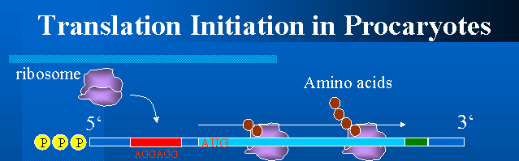

Bacterial mRNAs are commonly polycistronic. That means that they encode multiple proteins that are separatedly translated from the same mRNA molecule. Sometimes coding regions overlap, but it may not effect the fidelity of translation. Sometimes coding regions overlap by one base, which will be like UG[AUG].
In bacterial mRNA, ribosome binding site and start codon play important roles for translation initiation. Ribosome binding site is where the 30S small subunit binds first on mRNA. This site contains purine rich sequence which is called Shine-Dalgarno sequence. The 3' terminal of 16S rRNA in 30S subunit binds to this sequence and helps 30S subunit to bind to mRNA.
 This interaction makes a major contribution to the efficiency of initiation and provides the bacterial cell with a simple way to regulate protein synthesis. Many translational control mechanisms in procaryotes involve blocking the Shine-Dalgarno sequence, either by covering it with a bound protein or by incorporating it into a base-paired region in the mRNA molecule.
Most E.Coli mRNAs have Shine-Dalgarno sequences(except mRNA for dnaG primase). The sequence of 3' terminal of 16S rRNA in E.Coli is "....acctgcggttggatcacctcctta". Shine-Dalgarno sequence should be complement to this sequence, i.e., "taaggaggtgatccaaccgcaggt...." . However, this sequence is not usually conserved, and only 3 to 9 nucleotides will make pairs with the 16S rRNA 3'terminal sequence. If the length of complementarity is too long, ribosome will bind to mRNA too tightly, disturbing the migration of the ribosome. There are homology between E.Coli 16S rRNA and that of other bacteria.
Schneider et al. has analyzed translation initiation sites in terms of information theory. And Barrick et al. has quantitatively analyzed Shine-Dalgarno sequence by the experiments. There is a possibility that 16S rRNA binds to multiple regions of mRNA. This may be upstream of AUG, the spacer region between Shine-Dalgarno sequence and AUG, or downstream of AUG. But for downstream of AUG, the position +16 has been determined by experiments as being the limit of the downstream region in the mRNA which interacts strongly with the ribosome. I.G.Ivanov et al. has found a second putative mRNA binding site on E.Coli 16S rRNA.
Distance between the Shine-Dalgarno sequence and the start codon is known to affect efficiency of translation significantly. Optimal distance between the Shine-Dalgarno sequence and the start codon was estimated to be 4 to 9 base pairs.
Start codon is AUG in most of the time, but sometimes GUG(8%) and UUG(1%) work as start codon. In most cases, changing the rare initiation triplet into the more common AUG will cause the increase of expression and this may disturb the normal mechanism of gene expression. Thus one of the reasons that the bacteria use start codon like GUG or UUG is that they may be appropriate for the expression control of some specific genes. Notice that when GUG is read as a start codon, it is translated to formyl-methionine. If we change normal AUG to GUG, translation may not occur.
AUG triplets preceded by appropriately spaced Shine-Dalgarno-like sequences appear randomly throughout the E.Coli genome, which does not function as translation initiation site. Thus, besides Shine-Dalgarno sequence and start codon and their distance, there are some factors that affect translations. The important one is a secondary structure. It may separate or hide Shine-Dalgarno sequence and/or AUG triplet. Thus, an access of ribosome to non-initiation site of mRNA is restricted by the secondary structure of mRNA. But a good Shine-Dalgarno complementarity provides the ribosome with an increased affinity for its binding site, and thereby enhances its ability to compete against the secondary structure.
Another factors may be some consensus sequences. That are sequences preceding Shine-Dalgarno sequence, sequences between Shine-Dalgarno sequence and start codon, and sequence following the start codon.